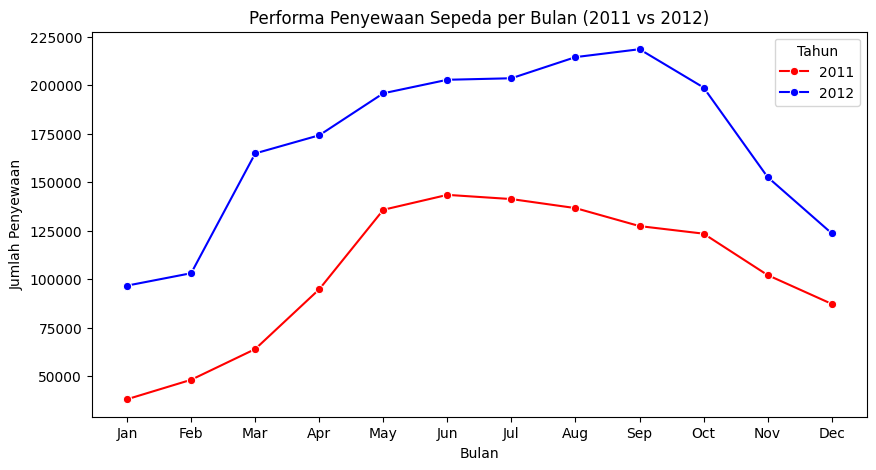
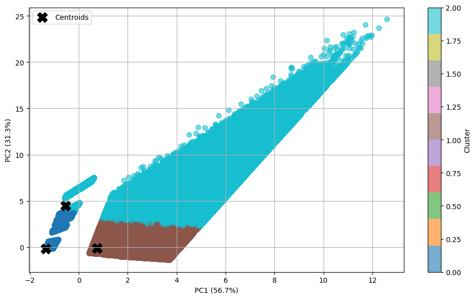
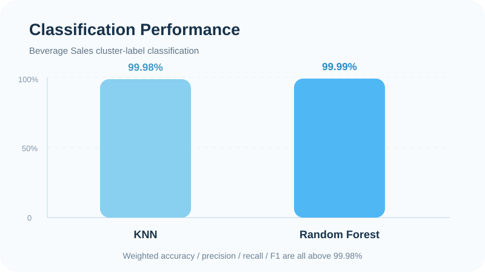
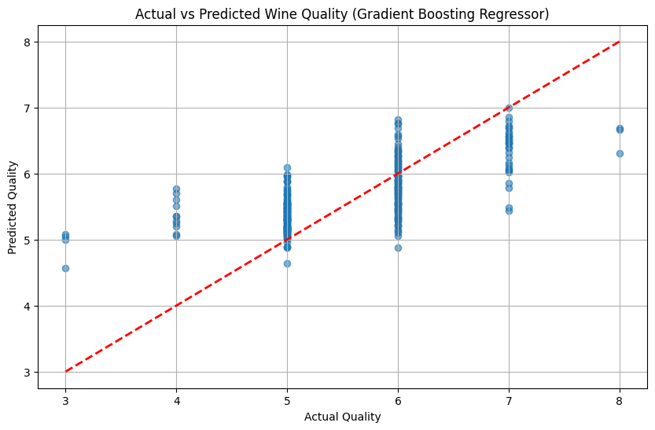
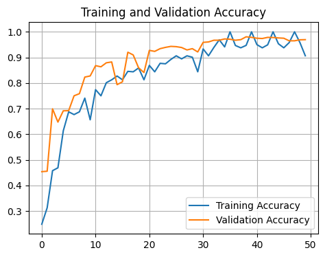

Bike Sharing Analysis
Analyzed Bike Sharing rental patterns from 2011–2012 to identify yearly, monthly, hourly, and seasonal trends, then presented the findings in an interactive Streamlit dashboard.

Analyzed Bike Sharing rental patterns from 2011–2012 to identify yearly, monthly, hourly, and seasonal trends, then presented the findings in an interactive Streamlit dashboard.

Applied K-Means clustering to the Beverage Sales dataset to identify purchasing patterns using customer type, unit price, quantity, discount, and total transaction value, supported by PCA and Silhouette evaluation.

Built supervised classification models to predict the cluster labels produced in the Beverage Sales clustering project, comparing K-Nearest Neighbors and Random Forest using accuracy, precision, recall, F1-score, and confusion matrices.

Built and compared regression models to predict red wine quality from physicochemical characteristics, with Gradient Boosting Regressor selected as the best final model.

Built a book recommendation system using TF-IDF and Cosine Similarity to recommend similar titles from the Goodreads-10k dataset, evaluated with Precision@10.

Built a deep learning image classification model using a Convolutional Neural Network (CNN) to recognize 15 vegetable classes from the Vegetable Image Dataset, supported by data augmentation and multi-format model export.

Analyzed the condition and spatial distribution of public street lighting (PJU) in Tasikmalaya Regency, combining data cleaning, geospatial analysis, condition mapping, and an interactive Streamlit dashboard.

Compared Content-Based Filtering and User-Based Collaborative Filtering under the same evaluation setting to analyze recommendation accuracy, coverage, hit rate, and the effect of sparse user-item interactions.